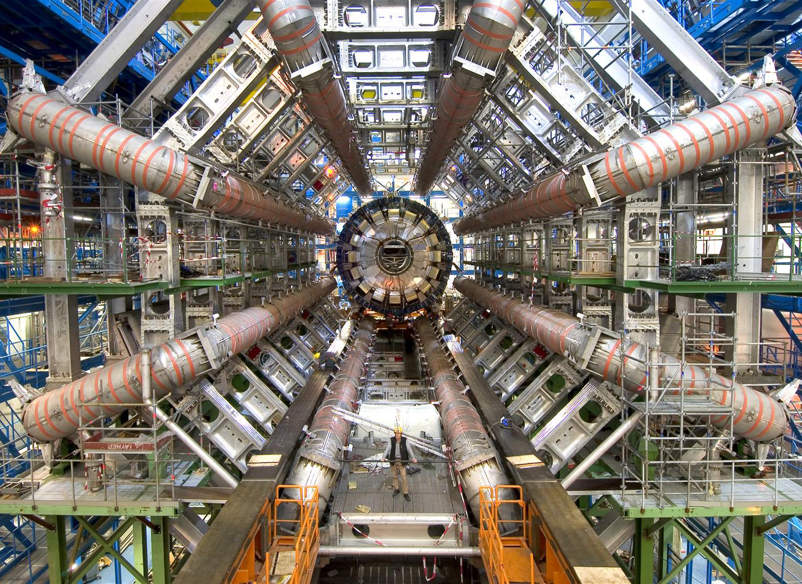
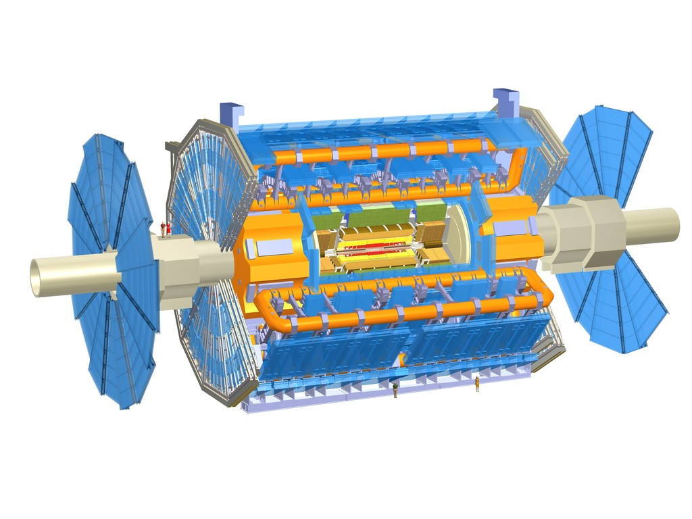

CERN and the LHC
These years have been a very exciting era for particle physics with
the construction, startup and running of the highest energy
accelerator in the world. The LHC has given experimentalists access
to energies that have never been explored before. We are eagerly
looking forward to collecting more data in the coming years to
search for new physics that could help answer important questions
about the mechanism that gives rise to the observed light Higgs
boson mass and the nature of dark matter. We also work on upgrades
to the muon detectors in order to be able to collect more data in
the future.
| CERN Home | ATLAS Home | HEP UIUC | Review of Particle Physics |
